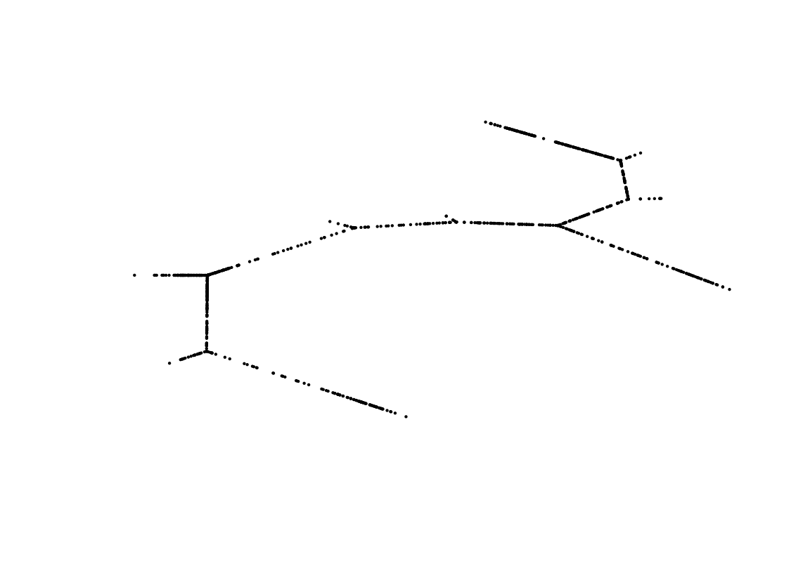
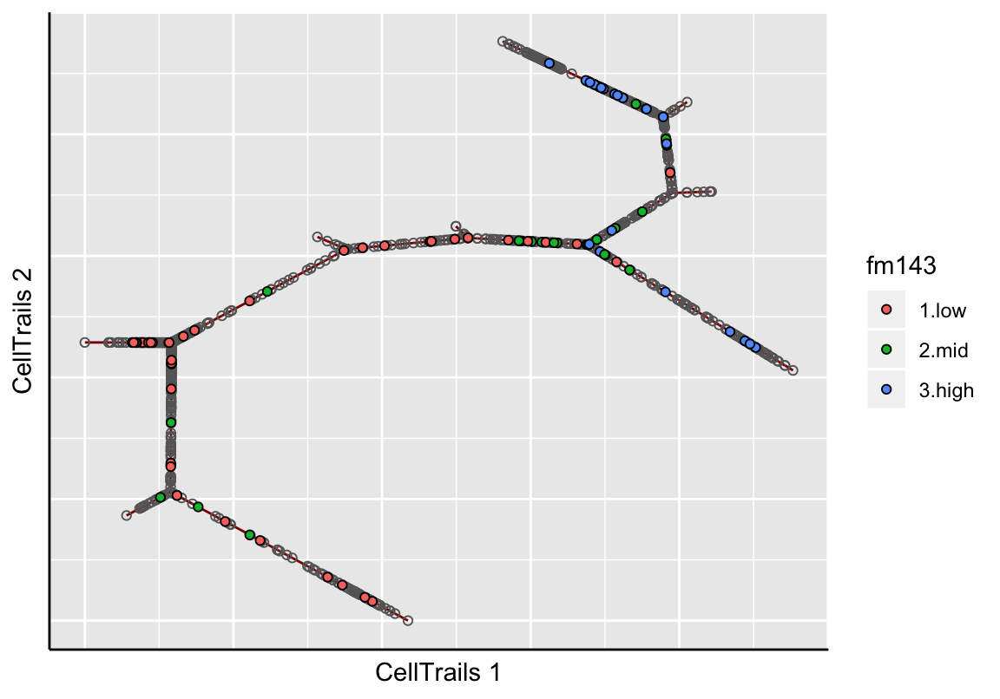
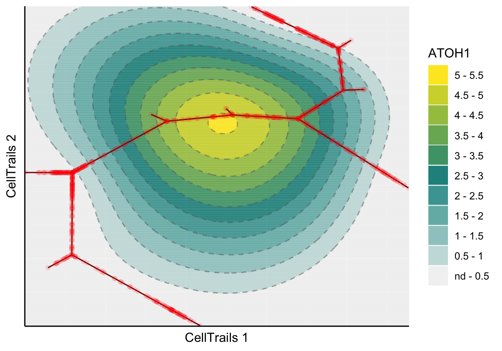
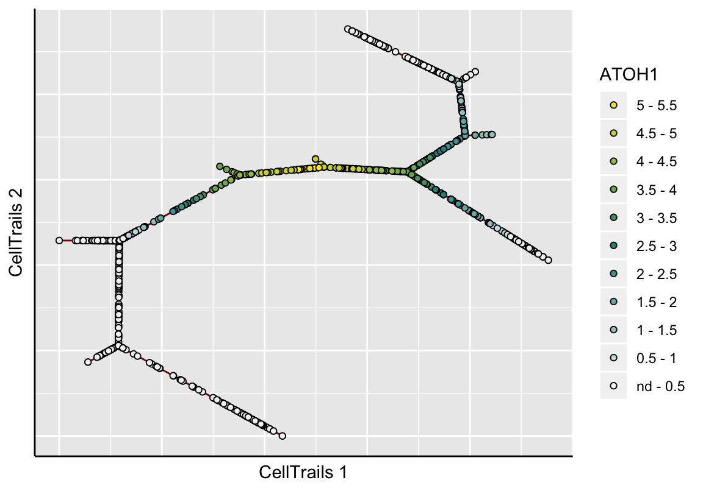

Chapter 7 CellTrails Maps
7.1 Graph Layout
CellTrails portrays a computed trajectory as collection of trails that can be found in a landscape shaped by individual expression dynamics. To generate such a topographic trail map - the CellTrails map - a two-dimensional spatiotemporal ordination of the expression matrix has to be computed. This can be done by any graph layout algorithm using the structural information from the trajectory graph, which is composed of nodes (=samples) and edges (=chronological relation between samples). We found that the freely available graph visualization software yEd (http://www.yworks.com/products/yed) has great capabilities to visualize and analyze a trajectory graph. An optimal layout is planar, i.e. it exhibits no crossing edges or overlapping nodes.
Therefore, CellTrails enables to export and import the trajectory graph structure using the common graphml file format. This file format can be interpreted by most third-party graph analysis applications, allowing the user to subject the trajectory graph to a wide range of (tree) layout algorithms. In particular, the exported file has additional ygraph attributes best suited to be used with yEd, which is freely available for all major platforms (Windows, Mac OS, and Linux).
# Export trajectory graph structure to graphml
# Color and label nodes by state
write.ygraphml(sce=exBundle,
file='yourFileName.graphml',
color_by='phenoName',
name='state',
node_label='state')Let’s open the exported graphml file in yEd:
If a layout has already been defined for a SingleCellExperiment object, the samples’ coordinates will be listed in the exported graphml file and will be directly interpreted by yEd. In this example, no layout was defined yet and therefore, all samples (nodes) are overlapping.
Please note that, in this example, the export function write.ygraphml was set to colorize nodes by their assigned state. However, it is possible to colorize and label nodes by any phenotype or feature expression data stored in the SingleCellExperiment object. For example, we could colorize the nodes by the recorded FM1-43 dye intensity to get an idea where the trajectory might start and end (a high FM1-43 dye indicates mature cells) and label the nodes by their determined state by setting the parameters color_by="phenoName", name="fm143" and label="state". Nodes with a missing phenotype information are not colorized and remain transparent.
Next, we layout the graph. Since the trajectory resembles a tree structre, we use a tree algorithm. We found that routing the trajectory graph in a quasi-radial style, called balloon style, works very well for our case. The layouter can be selected via Layout \(\rightarrow\) Tree \(\rightarrow\) Balloon. The following parameter setting was used in the original CellTrails publication:
Let’s run the algorithm to compute the layout:
Please note that edge crossings (i.e., two or more edges overlap) are not useful and if they occur we suggest to re-run the layouter with different parameters before saving the layout. Using either your mouse or the View \(\rightarrow\) Zoom In option allows to have a closer look. If we want to have the trajectory progressing from bottom left to bottom right (based on a specific feature expression or phenotype label), we need to transform the graph. This can be done via Tools \(\rightarrow\) Geometric transformations. Here, we select Mirror on Y axis and Mirror on X axis.
Finally, the file can be saved via File \(\rightarrow\) Save and reimported to R.
tl <- read.ygraphml("yourFileName.graphml")For illustration purposes, the computed trajectory layout for the example dataset is available within this package.
# Import layout
tl <- read.ygraphml(system.file("exdata", "bundle.graphml",
package="CellTrails"))
# Plot layout
plot(tl[,1:2], axes=FALSE, xlab="", ylab="", pch=20, cex=.25)Finally, we set the trajectory layout to the SingleCellExperiment object using the trajLayout function. Here, the parameter adjust indicates if edge lengths should be adjusted, such that they correspond to the inferred pseudotime.
# Adjust layout and store to object
trajLayout(exBundle, adjust=TRUE) <- tl
showTrajInfo(exBundle)## [[ CellTrails ]]
## logcounts: 183 features, 1008 samples
## Pheno data:
## sampleNames: "Cell-1-1" "Cell-1-2" ... "Cell-11-82" (1008)
## phenoNames: "fm143" "origin" ... "landmark" (4)
## Feature data:
## featureNames: "ABCA5" "ARF1" ... "USH2A" (183)
## rowData: none
## Trajectory data:
## trajFeatureNames: "ABCA5" "ARF1" ... "USH2A" (183)
## latentSpace: 1008 samples, 9 dimensions
## states: "S1" "S2" ... "S11" (11)
## Trajectories: [Component(#Vertices,Edges)]: 1(10,9)
## trajSampleNames: "Cell-1-1" "Cell-1-2" ... "Cell-11-82" (896)
## trajResiduals: MSE=9.9e-03
## landmarks: #Branches=7 #Terminals=9 #User=0
## trajLayout: available
## Trail data:
## trailNames: none# Plot adjusted layout
plot(trajLayout(exBundle), axes=FALSE, xlab="", ylab="", pch=20, cex=.25)
Sidenote. It is not a requirement to use yEd. The trajectory layout can also be defined by the user otherwise. The minimum requirement is, that the coordinates of each sample are stored in a data.frame whose row names correspond to the trajectory sample names. The sample names can be pulled from the SingleCellExperiment object using the function trajSampleNames. The layout can then be set using the accessor function trajLayout accordingly.
7.2 Plot Maps
After generating the layout, a two-dimensional visualization of the trajectory can be drawn. Here, the line represents the trajectory and individual points represent the samples. This plot type either colorizes individual samples by a metadata label (as available via phenoNames) or it shows the topography of a given feature’s expression landscape (as available via featureNames). When metadata are being visualized, the grey line represents the trajectory and the individual points represent samples. Samples that do not have a specific metadata label or a missing value are not shown. Let’s visualize how the cellular FM1-43 uptake distributes along the trajectory:
plotMap(exBundle, color_by="phenoName", name="fm143")
In the topographical plot, a smooth surface is fitted and values are predicted for a regular grid resulting in the shown map topography; the red line signifies the trajectory. Let’s take a view into the ATOH1 expression landscape, an early key transcription factor during sensory hair cell development:
plotMap(exBundle, color_by="featureName", name="ATOH1", type="surface.fit")
Let’s have a look into the standard error of the predicted expression surface by setting the parameter type.
plotMap(exBundle, color_by="featureName", name="ATOH1", type="surface.se")Alternatively, CellTrails enables to show the samples only, instead of the whole fitted expression surface. Here, we have two options: either the raw expression or the smoothed values.
# Raw
plotMap(exBundle, color_by="featureName", name="ATOH1", type="raw")# Smoothed
plotMap(exBundle, color_by="featureName", name="ATOH1", type="surface.fit",
samples_only=TRUE)